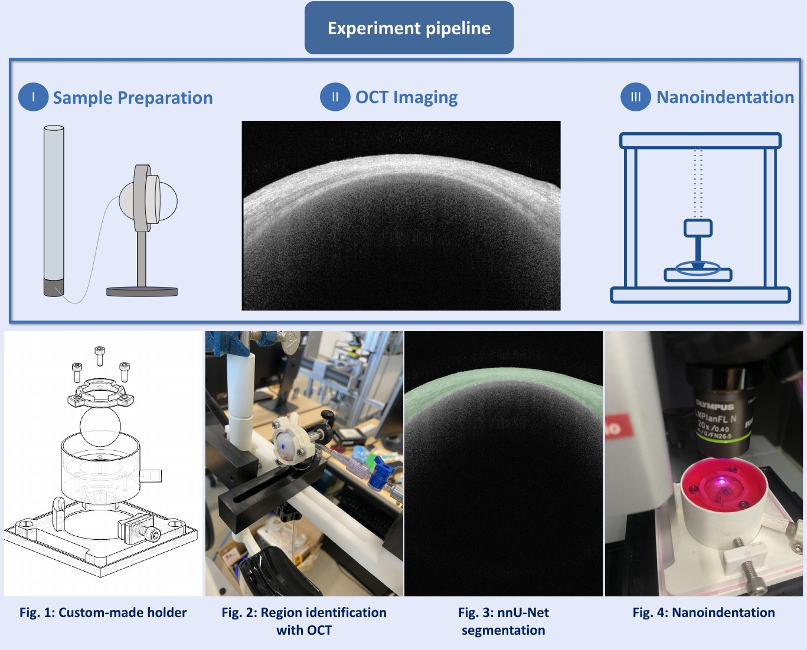

Scleral stiffness across the eye
An experimental pipeline was co-developed to measure the mechanical properties of the sclera systematically across the eye globe. The eye is kept fixed during testing by a custom holder, which was designed in CAD and prototyped by 3D printing. The region of interest is identified with optical coherence tomography (OCT), and the local properties are then measured by nanoindentation at different locations.
Because the forces and indentation depths are very small, the protocol was refined step by step until reproducible measurements were obtained, and clear regional differences in scleral stiffness were revealed. The results were presented as a poster at the SSBE Annual Meeting 2026.

📐
Open design files
The CAD files of the immersion fixture used for nanoindentation of whole ex vivo eyes and flat soft-tissue samples have been made openly available on Zenodo:
Valipour, A., Frigelli, M., Kochetkova, T., Kreienbühl, R., Büchler, P., & Ariza Gracia, M. Á. (2026). Immersion fixture for nanoindentation of whole ex vivo eyes and flat soft-tissue samples: CAD design files (Version 1.0) [Graphic]. Zenodo. https://doi.org/10.5281/zenodo.23920122
The CAD files of the immersion fixture used for nanoindentation of whole ex vivo eyes and flat soft-tissue samples have been made openly available on Zenodo:
Valipour, A., Frigelli, M., Kochetkova, T., Kreienbühl, R., Büchler, P., & Ariza Gracia, M. Á. (2026). Immersion fixture for nanoindentation of whole ex vivo eyes and flat soft-tissue samples: CAD design files (Version 1.0) [Graphic]. Zenodo. https://doi.org/10.5281/zenodo.23920122